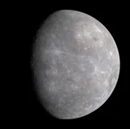
Mercurewiki-fr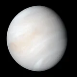
Vénuswiki-fr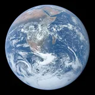
Terrewiki-fr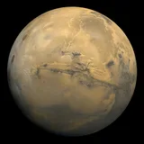
Marswiki-fr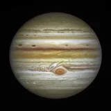
Jupiterwiki-fr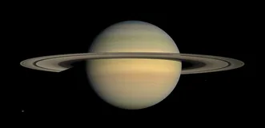
Saturnewiki-fr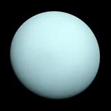
Uranuswiki-fr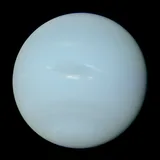
Neptunewiki-fr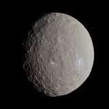
CERESwiki-fr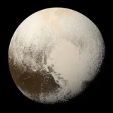
Plutonwiki-fr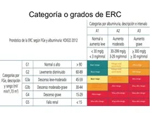
Hauméabing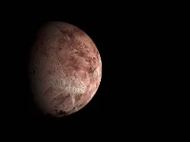
Makémakéwiki-fr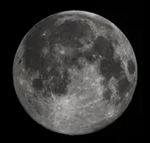
Lunewiki-fr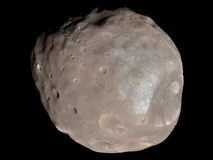
Phobosmemo:lunes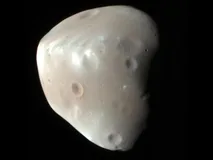
Déimosmemo:lunes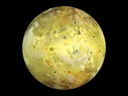
Iomemo:lunes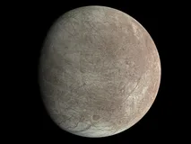
Europememo:lunes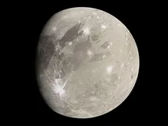
Ganymèdememo:lunes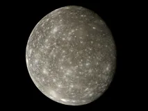
Callistomemo:lunes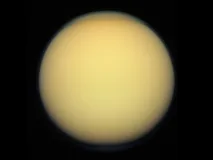
Titanmemo:lunes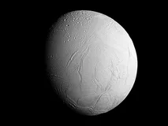
Enceladememo:lunes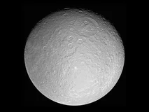
Rhéamemo:lunes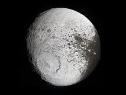
Japetmemo:lunes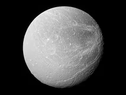
Dionémemo:lunes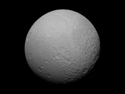
Téthysmemo:lunes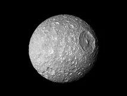
Mimasmemo:lunes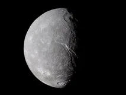
Titaniamemo:lunes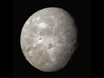
Obéronmemo:lunes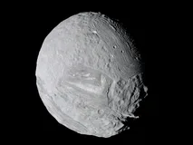
Mirandamemo:lunes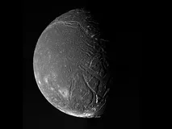
Arielmemo:lunes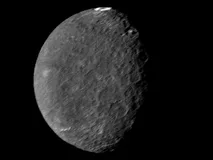
Umbrielmemo:lunes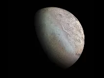
Tritonmemo:lunes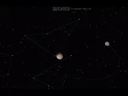
Charonmemo:lunes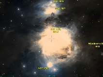
Nébuleuse d'Orionwiki-fr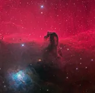
Nébuleuse de la Tête de Chevalwiki-fr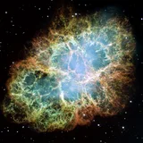
Nébuleuse du Crabewiki-fr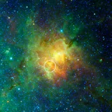
Nébuleuse de l'Aiglewiki-fr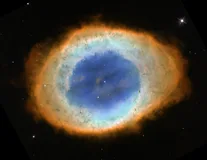
Nébuleuse de la Lyrewiki-fr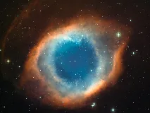
Nébuleuse d'Helixbing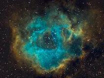
Nébuleuse de la Rosettewiki-fr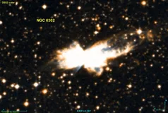
Nébuleuse du Papillonwiki-fr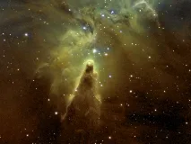
Nébuleuse du Cônewiki-fr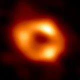
Sagittarius A*wiki-fr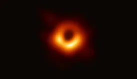
M87*wiki-fr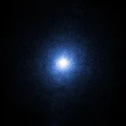
Cygnus X-1wiki-fr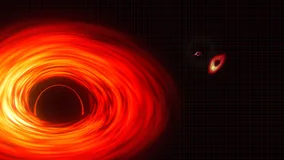
TON 618wiki-fr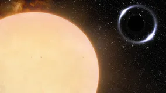
Gaia BH1wiki-fr